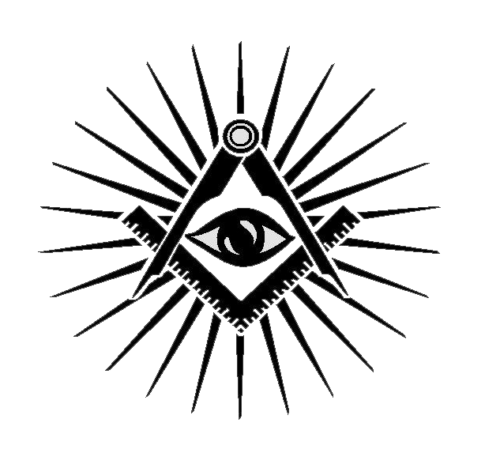

НЕ НАМ ХВАЛА, ГОСПОДИ
NON NOBIS, DOMINE
Набір простих напозір істин – свобода, рівність, братерство.
Ніби очевидно. Просто, як збудувати будинок. Посадити дерево. Виростити дітей. Просто, як крапля води. Але прийняти ці максими виявилось простіше, ніж полюбити ближнього чи полічити зорі небесні. Себе люблять всі. Всі свідомі власної унікальности. Вправности. Дотепности та працьовитости. Всі прагнуть слави земної і певні нагороди небесної. І це суть найбільшого фундаментального гріха – гордині. Але саме погорда людини і породжує великий дух вільнодумства. Зрештою, завдяки цьому польотови вільної думки таки прийшов новий, модерний час. Прагнення «переміряти» старий світ за новими мірилами з’явилося у добу Середньовіччя у потужному християнському ордені лицарів- тамплієрів.
Попри розгром лицарів Храму зупинити будову силам зла не вдалося і Новий Світ таки постав, завдяки невтомній роботі будівничих свободи.
Відтак, у XVII столітті було оновлено Англію, і речником перебудови був великий Томас Гобс. Відтак, у XVIII столітті постала нова Франція, розбудована за моделями, запропонованими служителями Абсолютного Духу – Вольтером, Руссо та Дідро.
За кресленнями вільнодумців було збудовано й Сполучені Штати Америки. Побудова від «зера» окремо взятої держави виявилась настільки успішною, що з тамтих часів долар залишається одним з універсальних інструментів регуляції світу.
Тріумф побудови Нової Європи став можливим лише після II Світової Війни, коли в європейських країнах змогли подолати амбіції націонално стурбованого люмпеніату. І досягнути порозуміння на старому фундаменті й за старими ж кресленнями – «Свобода! Рівність! Братерство!» Зрештою, лише з другої спроби, у 1991 році, до «перебудови» Совєцького Союзу, Отцям-Креаторам вдалося запустити й принципово новий політичний проект – Україну.
Але сутність вільного математичного підходу до суспільного крою не вичерпується державною владою. Правдива, і, певно, єдина влада – це інтелектуальна влада. Не примусом, як зауважив Великий Поступовець Джонатан Свіфт, необхідно керувати людьми – «для управління розумною істотою достатньо самого лише розуму». Водночас «незримі володарі» глобального світу не менше потерпають, ніж «підневільні», кидаючи життя та душу на олтар побудови греблі, муру, склепіння. У топку свободи. Заради розпалення квітки рівности. Куючи ланцюг братства в ім’я відповідальности за незрячих та лінивих. Заради з’єднання зусиль в єдиний п’ястук. Заради перетворення холопів у громадян, туземної грошви у долар та євро, індіанців у громадян. Малоросів в українців. Принижених у рівних собі. Заради злиття поодиноких партитур у світову симфонію. Задля переходу поодиноких хрипких заспівів у хор міжлюдськї любови. Перековуючи власне щастя у світло. Часом самим згоряти у сім вогні. Але нести тіні великих каменярів Нового, ліпшого світу – Гобса й Локка,Вольтера і Франкліна, Джеферсона і Костюшка, Сковороди і Міцкевича, Шевченка і Жуковського, Кіплінга та Франка, Петлюри і Аденавера, Горбачова, Обами та Ющенка. Котрі вмурували своє слово в євангеліє свободи, псалом рівності, суру братства, лишившись для «вдячних» нащадків забронзовілими «класиками» красномовства. Певно, це і є розплата за владу та виконаний перед людством обов’язок.
там перемога, де згода - ibi victoria, ubi concordia
Франко-масонство
Більше, ніж просто таємне братство, це система моралі та філософії. Це принцип організациї життя. Франкомасо-ни – люди, котрі заприсяглись жити, дотримуючись законів і традицій, започаткованих древньою гільдією каменярів.
Вони також вчаться, що побудову споруди можна зрівняти з фомуванням характеру. Франкомасони заприсягаються бути вірними заповідям організації: вони повинні виявля-ти братську любов до ближніх, допомагати браттям, які потребують допомоги, прийняти принципи віри, таємності і рівності. Вони повинні бути терпеливими до вірувань ото-чуючих. Вони вчаться розпізнавати інших членів братства за допомогою таємного рукопотискання, паролів і знаків. Франкомасони не дотримуються догматів, їм не говорять, у що конкретно треба вірити.

Кутник і Циркуль
Утворюють чотиристоронню фігуру, або чотирикутник. Кутник символізує чесність, благородність і впевненість, що все знаходиться на своїх місцях у відповідності з великим планом. Циркуль же символізує абстрактний світ. В просторі між кутником і циркулем часто знаходяться інші символи: зірка, око чи літера «G». Всевидяче око, місяць, зірки, інтерпритуються як символи світла, правди і пізнання, чи навіть пізнання Бога. Трикутник явяє собою три елементи cвятої Трійці – Отця, Сина і Святого Духа, – і чимало в житті масонів пов’язано з цим числом: в ложі три ступені, три основних принципи франкомасонства...
Всевидяче Око
Символізує віру у здатність Бога бачити те, що знаходиться в серцях людей. Саме тому християни використовували око в якості релігійного символу протягом багатьох сторіч.
Всевидяче око часто розташоване в тикутнику, так як чисто три має велике значення для Франкомасонів.
Фартухи, які носять Франкомасони, перш за все нагадують про древнє ремесло каменярів, так як перші масони носили фартухи, тримаючи в них інструменти і захищаючи одяг від бруду. Фартухи розписували різноманітними символами. Фартухи традиційно виготовляють зі шкіри молодого ягня, що являє собою символ незаплямованої чистоти. Масон, носить він фартух чи ні, повинен прожити життя, не забуваючи про чистоту, він повинен діяти з бездоганною досконалістю в помислах. Фартух супроводжує масона протягом всього життя, аж до могили.
масонська ложа
Первинною організацією в масонстві є Ложа. Кожен масон має належати до певної ложі. Окремі Ложі об’єднуються у Велику Ложу. Першою Великою Ложею була Об’єднана Велика Ложа Англії, яка створена шляхом об’єднання чотирьох лож у 1717 р.
За правилами регулярного масонства на території однієї країни може діяти тільки одна Велика Ложа. Кожною ложею керує Достойний Майстер, який обирається ложею, а Великою Ложею керує відповідно Великий Майстер.
В кожної ложі є свій номер. Ці номери записуються членами Великої Ложі в строгому порядку, тобто чим менший номер, тим древніша ложа. Слово «ложа» може використовуватись як по відношенню до організації людей на місцевому, регіональному і національному рівнях, так і по відношенню до споруди, в якій проводяться засідання.
Ложа поділена на чотири сторони, і місця для сидіння розташовані по периметру стін. В ложі міститься вівтар, на якому лежить відкрита Книга Святого Закону. Це не обов’язково Біблія; такою книгою може бути Коран чи будь-який інший священний текст, якщо він уособлює вираження віри членів ложі у Вищу Матерію.
Ландмарки
Тобто давні основні масонські правила. Встановлюють од-ним з принципів масонства «Базування спекулятивної (сві-тоглядної) науки на оперативних (дієвих) началах, а також символічне використання та пояснення термінів цього ре-месла задля навчання релігійних та моральних принципів».
Отже для навчання моральним принципам масони вико-ристовують насамперед символи та поняття будівничого мистецтва. Так важливу роль в масонстві відіграють такі символи як камінь. Храм, косинець, циркуль, молоток та інші.
Обряд посвячення
Кандидата в масони на початку обряду заводять у Кімна-ту Роздумів, пофарбовану в чорний колір, обстановка якої відповідає назві, в ній можуть бути предмети, що нагаду-ють кандидату про тлінність буття. У ній кандидат напише на папері морально-філософський заповіт, свої побажання та обітниці щодо себе та інших людей, своєї країни, родини і людства в цілому. Потім його попросять ще раз підтверди-ти свою віру в Бога.
Перед введенням в храм, де відбувається посвята, канди-дату зав'язують очі. На знак смирення кандидат «ні одяг-нений, ні роздягнений» (частково роздягають, а лівi голі груди на знак відкритості серця), у нього відбираються всі цінності, йому засукочують праву штанину і знімають лівий черевик. Йому на шию надягають мотузку, що символізує узи людської недосконалості. Кандидата проводять у при-міщення храму (зал засідання ложі), де він проходить через ритуальні випробування, слухає настанови морально-філо-софського характеру, бере участь у невеликих сценах та діалогах, мета яких наочно піднести моральні настанови ритуалу. Наприкінці церемонії він приносить урочисте зо-бов'язання перед Священною Книгою тієї релігії, яку він сповідує. Далі кандидату знімають пов'язку, говорячи при цьому, що він тепер «пройшов випробування і гідний Світу», на нього надягають масонський фартух, а після головую-чий на церемонії оголошує присутнім про те, що тепер вони набули нового брата і закликає допомагати йому в трудно-щах, будучи впевненими в тому, що і він у важку хвилину допоможе їм. Часто церемонія посвячення проводиться з музичним супроводом, що ще більше посилює враження кандидата.